2
Working with Design Intent
The following functionality is covered in this section:
- Creating Design Intents
- Syncing Design Intent
- Editing a Design Intent
- Adding Objects to a Design Intent
- Copying Objects with Design Intents
- Removing Objects from Design Intents
- Deleting a Design Intent
- Generating Reports on Design Intent
- Verifying and Signing Off a Design Intent
Creating Design Intents
You can create a design intent using the Create Design Intent form. Access the form by right-clicking the required object in the Navigator or on the canvas and choose Design Intent – Create Design Intent.
The type of object selected in the Navigator or on the canvas determines the type of design intent that can be created. The design intent categories are Cell DI, Device DI, Net DI, Pin DI, High Current DI, and Max Voltage Drop DI.
- The Net category can also be used for global nets.
- The categories HighCurrent and MaxVoltageDrop can both be created for an instance terminal, but an instance terminal can only be associated with one from each category.
Each category type has a design intent icon associated with it. For more details, see Design Intent Icons in Navigator.
The following sections provide information about creating design intents:
- Sections within the Create/Edit Design Intent form
-
Creating a Design Intent
- Creating a HighCurrent Design Intent
- Creating a HighCurrent Design Intent for Multiple-bit Instances
- Creating a MaxVoltageDrop Design Intent
- Creating a Cell Design Intent for a Cellview
- Creating a Device Design Intent for Half Cells
- Creating a Design Intent in Layout XL
- Creating Design Intents in the Constraint Manager
Sections within the Create/Edit Design Intent form
The
The upper section lets you provide a unique identifier for the design intent and defines a style so that it can be identified on the canvas and distinguished from other design intents. This section is available in Schematics XL if creating or editing a design intent, but it is only available in Layout XL when creating a design intent.
The middle section enables schematic designers to capture the requirements for the design intent using notes and properties. This section of the form is only editable in Schematics XL.
The lower section enables the layout designer to capture their implementation strategy and feedback progress and status to the schematic designer. This part of the form is only editable in Layout XL.
The notes recorded in the middle and lower sections of the form capture the comments, queries, and responses between the schematic and layout designers to develop a tracked conversation around the specification and implementation of the design intent. The design notes (Schematics XL) are initially used to record the design goals, and the implementation notes (Layout XL) are used to add notes regarding the implementation. During the implementation, any issues or queries can be recorded in the implementation notes and the responses from the schematic designer recorded in the design notes. The communication is useful as a record and the information entered is used within Generating Reports on Design Intent.
Creating a Design Intent
To create a design intent in Schematics XL:
-
Right-click one or more objects in the Navigator or on the canvas and choose Design Intent – Create Design Intent.
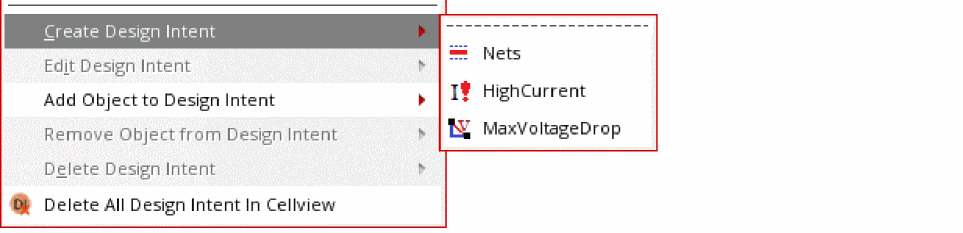The type of object selected determines the design intent options available. A context-sensitive submenu is displayed for those objects with multiple design intent categories.
The Create Design Intent form is displayed.
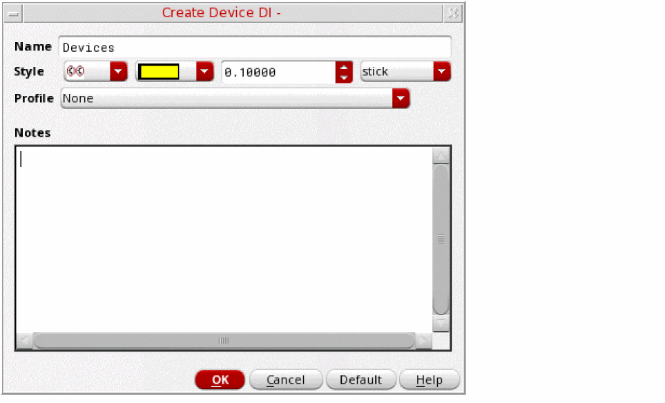The options displayed on the form vary to the type of object, category and profile selected. - Specify a Name for the design intent.
- Define a Style to identify the design intent annotation and distinguish it from other design intents by selecting a shape, color, font size and font. The selections made identify the design intent annotation on the canvas and are reflected on the associated design intent icons in the Navigator.
-
(Optional) In Schematics XL, define property requirements by selecting a pre-configured Profile. Additional selection options are displayed specific to the profile selected.
If displayed, use the Show/Hide Disabled button to toggle the display of the selected property options. -
In Schematics XL, define property requirements by in the Notes. Add any additional notes for the layout designer about the purpose of the design intent, its properties and to record any special considerations for implementation.
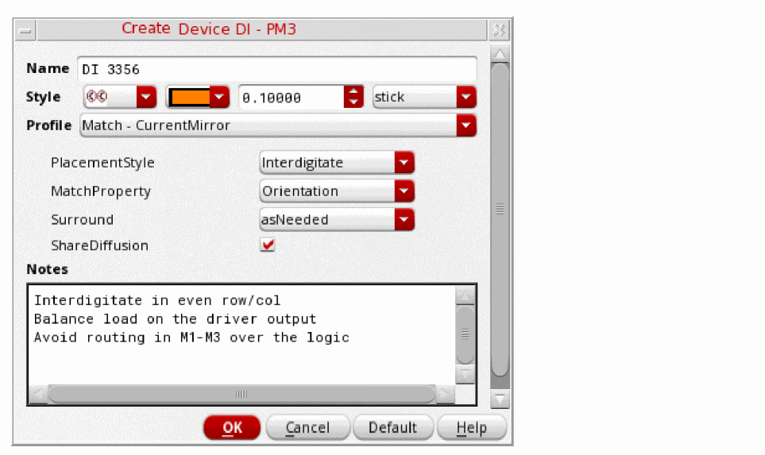 -
Click OK.
An annotation is displayed on the canvas and in the Navigator, the object icon is displayed with a design intent icon 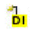 overlaid and a design intent annotation highlights the object on the canvas.
In Layout XL, the affected objects are immediately displayed with a sync icon as a prompt to Sync Design Intent.
The function ciTemplateCreateDI can also be used to create a design intent using SKILL. For more details about the SKILL functions available for Design Intent, see
Creating a HighCurrent Design Intent
To create a design intent for a net, pin, or instance terminal with currents:
-
Right-click a net, pin, or instance terminal in the Navigator or on the canvas and choose Design Intent – Create Design Intent – HighCurrent.
-
Specify a name for the design intent.
For the category HighCurrent, the name given for the design intent is only displayed in the Navigator. On the canvas, the current value is displayed as the annotation for each member instance terminal, for example5A. The annotation for the reference terminal has an additional(REF)to signify that it is the reference terminal. For example5A(REF). -
In the Style field, Arrow is preselected for the category HighCurrent. If required, specify a color, font size, and font to identify the design intent annotation on the canvas.
- Define the requirements for the following pre-defined profile properties:
-
(Optional) Click Setup Pin/InstTerm Currents.
The Inst Terms dialog box opens. It lists all instance terminals available on the net and lets you define the current for each instance terminal to be sourced.
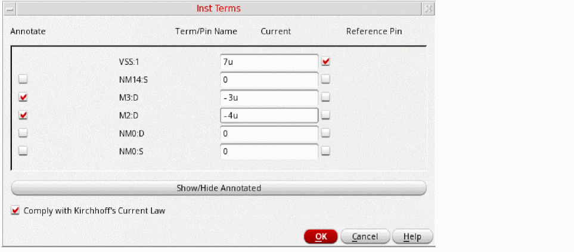 - (Optional) Select the Annotate check box to create an annotation and a glyph on the canvas for the required terminals. The current value is used as the annotation for each terminal.
- (Optional) Click Show/Hide Annotated to toggle the display of the instance terminals selected for annotation in the Inst Terms dialog box.
-
(Optional) Select the Comply with Kirchhoff's Current Law check box to ensure that the sum of all currents entering and exiting a node is zero.
For example, to comply when7uis the sum of all currents, the reference current must be-7uto give a total current of0. Conversely, if the sum of all currents is-3u, the reference current must be3u. -
Click OK.
If you attempt to close the Inst Terms dialog box with the Comply with Kirchhoff's Current Law check box selected and the total current does not equal zero, a warning message is displayed. -
In the Create Design Intent form add any notes to assist in the implementation of the design intent and click OK.
A HighCurrent design intent is created on the canvas, and the annotation label displays the total current.When the design intent is transferred from Schematics XL to Layout XL, the callback ciDiPostTransferHighCurrent is run to split the current evenly between the mfactored members in Layout XL.
Related Topics
Create Design Intent (form reference)
Edit Design Intent (form reference)
Creating a HighCurrent Design Intent for Multiple-bit Instances
Modifying Sample Profiles and Property Definitions
Creating a HighCurrent Design Intent for Multiple-bit Instances
To create a design intent for a multiple-bit pin or instance, or for a single-bit instance with currents connected to a multiple-bit instance terminal or pin:
-
Right-click the net, pin, or instance terminal in the Navigator or on the canvas and choose Design Intent – Create Design Intent – HighCurrent.
If you are creating the design intent for a multiple-bit pin connected to multiple-bit instance terminals, the Select Reference Pin(s) form appears listing the pins that are available for selection.
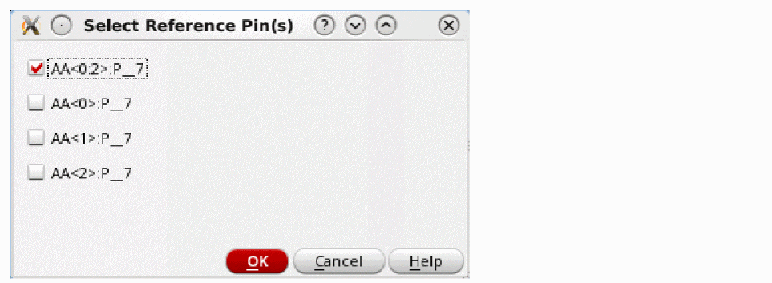 - Select whether the reference pin for the design intent is to be the bundled multiple-bit pin or a single-bit pin and click OK.
- Specify a name and style for the design intent.
- In the Profile field, Current is the only profile available for the HighCurrent design intent category and must not be overridden with a user-defined profile. Specify the requirements for the following pre-defined properties:
-
Click Setup Pin/InstTerm Currents.
The Inst Terms dialog box opens. It lists all instance terminals available on the net and lets you define the current for each instance terminal to be sourced. -
Enter the current value for the required instance terminals or pins.
For multiple-bit pins connected to multiple-bit instance terminals, the terminals listed are determined by what you selected on the Select Reference Pin(s) form. If you specified that the reference pin is a multiple-bit instance, the instance terms are bundled as multiple bits. The current value specified applies equally to each instance term within the bundle. A current of100uAwould be allocated to each of the instance termsM17<0>:G,M17<1>:G, andM17<2>:G.
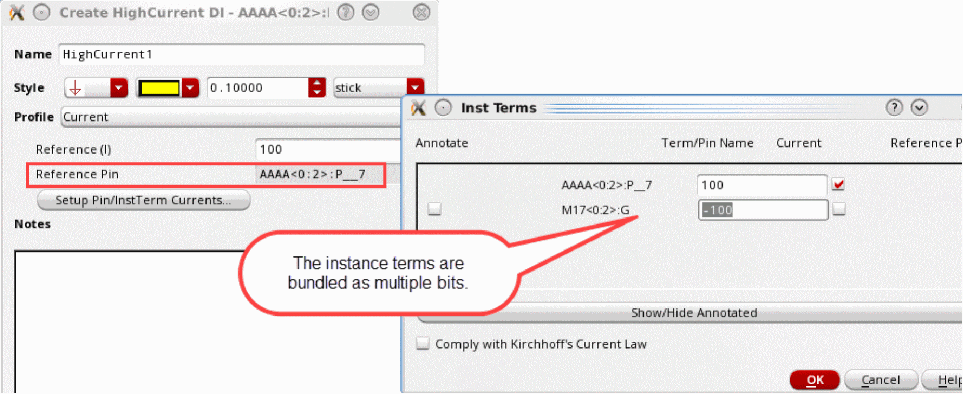If you specified that the reference pin is a single-bit instance, the instance term is also single bit. The Current value applies to the single-instance term.
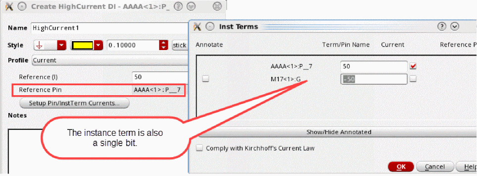For single-bit pins connected to multiple-bit instance terminals, the reference pin is the single-bit pin. The instance terms are bundled as multiple bits. The Current value you specify is shared between each instance term within the bundle. A current of100uAwould be allocated as50uAtoSS<0>:Gand50uAtoSS<1>:G.
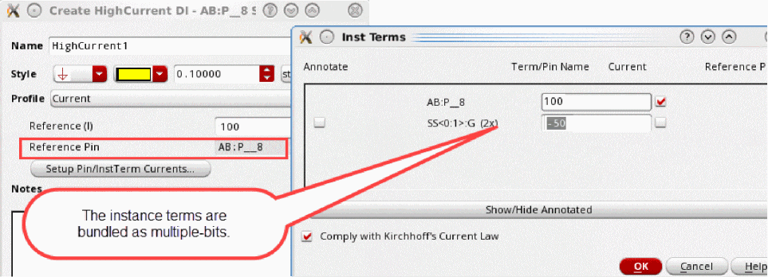 - (Optional) Select the Annotate check box to create an annotation and a glyph on the canvas for the required terminals. The current value is used as the annotation for each terminal.
- (Optional) Click Show/Hide Annotated to toggle the display of the instance terminals selected for annotation in the Inst Terms dialog box.
-
(Optional) Select the Comply with Kirchhoff's Current Law check box to ensure that the sum of all currents entering and exiting a node is zero.
For example, to comply when7uis the sum of all currents, the reference current must be-7uto give a total current of0. Conversely, if the sum of all currents is-3u, the reference current must be3u. -
Click OK.
If you attempt to close the Inst Terms dialog box with the Comply with Kirchhoff's Current Law check box selected and the total current does not equal zero, a warning message is displayed. -
In the Create Design Intent form add any notes to assist in the implementation of the design intent and click OK.
A HighCurrent design intent is created on the canvas, and the annotation label displays the total current.
Related Topics
Create Design Intent (form reference)
Edit Design Intent (form reference)
Creating a HighCurrent Design Intent
Modifying Sample Profiles and Property Definitions
Creating a MaxVoltageDrop Design Intent
To apply a design intent to a net, pin, or instance terminal with voltages:
- Right-click a net, pin, or instance terminal in the Navigator or on the canvas and choose Design Intent – Create Design Intent – MaxVoltageDrop.
-
Specify a Name for the design intent. For the category MaxVoltageDrop, the design intent name specified is only displayed in the Navigator. On the canvas, the voltage is displayed as the annotation for each member pin/instance terminal, for example
12V. The annotation for the reference pin has an additional(REF)to signify that it is the reference pin/terminal, for example12V(REF). - In Style, the Lightning Flash is preselected for the category MaxVoltageDrop. If required, specify a color, font size, and font to identify the design intent annotation on the canvas.
-
(Optional) In Profile, Voltage is the only profile available for this design intent category and must not be overridden. For more details, see Modifying Sample Profiles and Property Definitions. The Voltage profile has the following properties:
Max Voltage Drop defines the maximum voltage drop between the Reference Pin and the instance terminals/pins.
Reference Pin is the pin from which the maximum voltage drop is measured by all the other instance terminals/pins on a net. To select a different reference pin or to amend the instance terminals/pins enabled, click the ...button to open the Inst Terms form. This form lists all the instance terminals/pins available on a net and if enabled, each is checked against the maximum voltage drop for the reference pin. To change the reference pin, select the Reference check box for the required instance terminal/pin.
You can specify different voltages for each instance terminal/pin using positive or negative variations, but if the voltage specified at Max Voltage Drop is amended, the voltages associated with the enabled instance terminals/pins are also overridden. - Add any additional notes to assist in the implementation of the design intent.
-
Click OK. A MaxVoltageDrop design intent is created on the canvas, the annotation label displays the name of the object.(ICADVM18.1 Only) When the design intent is transferred from Schematics XL to Layout XL, the callback ciDiPostTransferMinMaxVoltage is run to propagate the design intent properties Min Voltage, Max Voltage, Signal Type, Power Sensitivity, and Ground Sensitivity on the associated design intent objects.
Creating a Cell Design Intent for a Cellview
To create one or multiple Cell design intents to specify design instructions that are intended for the entire cellview, not just for individual objects:
-
Ensuring that no objects are selected, right-click the canvas, (or in the Navigator, right-click the cell) and choose Design Intent – Create Design Intent - Cell.
The Create Design Intent form is displayed. - Specify a Name for the design intent.
- Define a Style to identify and distinguish the design intent from other cell design intents by selecting a color, font size, and font. The default shape Design Notes Legend is already preselected.
-
(Optional) Define property requirements by selecting a pre-configured Profile. Additional selection options are displayed specific to the profile selected.
If displayed, use the Show/Hide Disabled button to toggle the display of the selected property options. - Define property requirements in the Notes and add any additional notes for the layout designer about the purpose of the design intent, its properties and to record any special considerations for implementation.
-
Click OK.
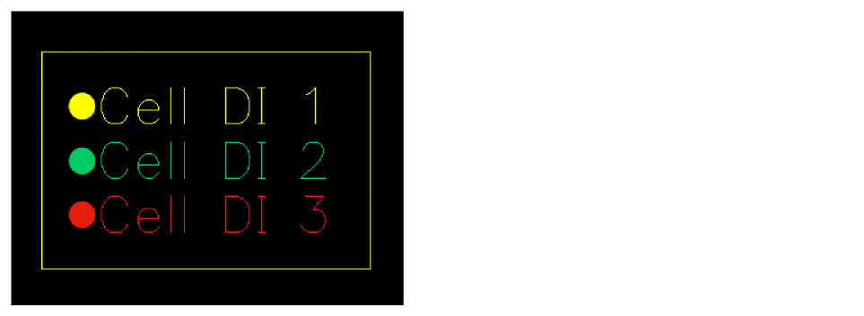
The annotation for the new cell design intent is automatically created within a rectangular box positioned on the lower left of the canvas in Schematics XL.
This box can be repositioned as required. Any subsequent cell design intents created are also displayed within this box, wherever it is positioned.
Creating a Device Design Intent for Half Cells
To apply a design intent to two groups of devices that should be laid out symmetrically:
- Select the objects for the first half in the Navigator or on the canvas.
- Right-click and choose Design Intent – Create Design Intent – Devices.
- Specify a Name for the design intent.
- Define a Style to identify the design intent annotation on the canvas.
-
Select the Profile, Half to Half.
Additional selection options are displayed specific to the Half to Half profile.
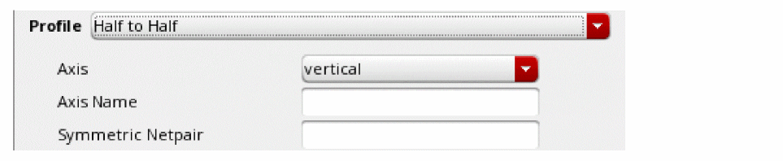 - Select and enter the property options for the design intent.
- Add any additional notes to assist in the implementation of the design intent.
-
Click OK. A device design intent annotation is created on the canvas for the first half.
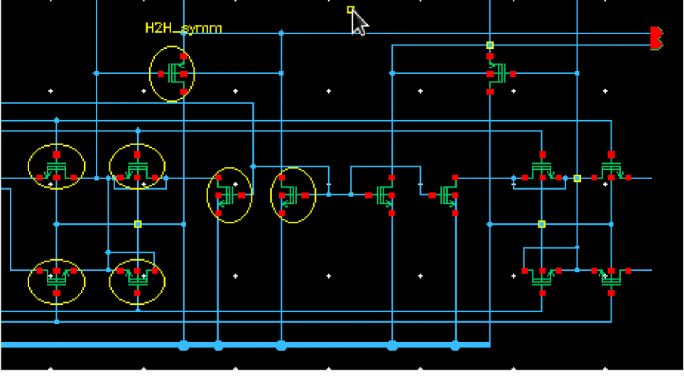 - Select the objects for the second half.
- Right-click and choose Design Intent – Add Objects to Design Intent.
-
Select the second half of the device to be created. Device design intent annotations are created on the canvas for the second half.
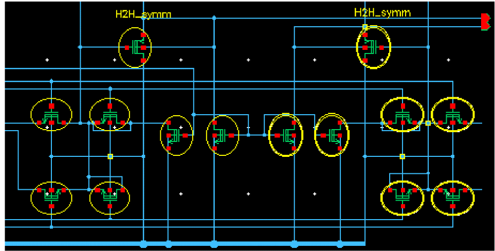Selecting an object on either half of the device creates halos over the corresponding objects in each half.In Layout XL, the affected objects are immediately displayed with a sync icon as a prompt to Sync Design Intent.
Creating Design Intents in Layout XL
The process for creating design intents in Layout XL differs as all design intents must be reviewed and validated within Schematics XL before they are fully integrated into the standard implementation process.
The following sections provide information about creating design intents in Layout XL:
Creating a Design Intent in Layout XL
- Select an instance in the Navigator or on the canvas in Layout XL.
-
Right-click and choose Design Intent – Create Design Intent.
The Create Design Intent form is displayed.
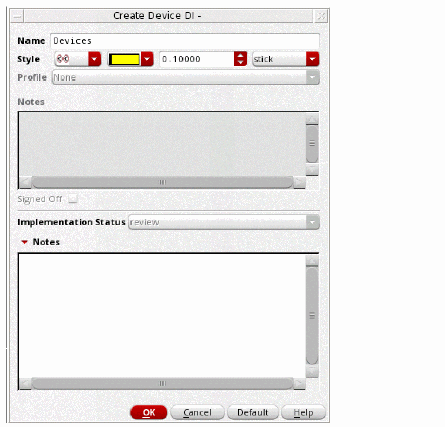 - Specify a Name for the design intent.
- Define a Style to identify the design intent annotation on the canvas.
-
In the lower section Notes, add any information regarding the implementation and the purpose of the design intent for the schematic designer. The Notes in the upper section of the form are unavailable. An Implementation Status of
reviewis set automatically and cannot be changed.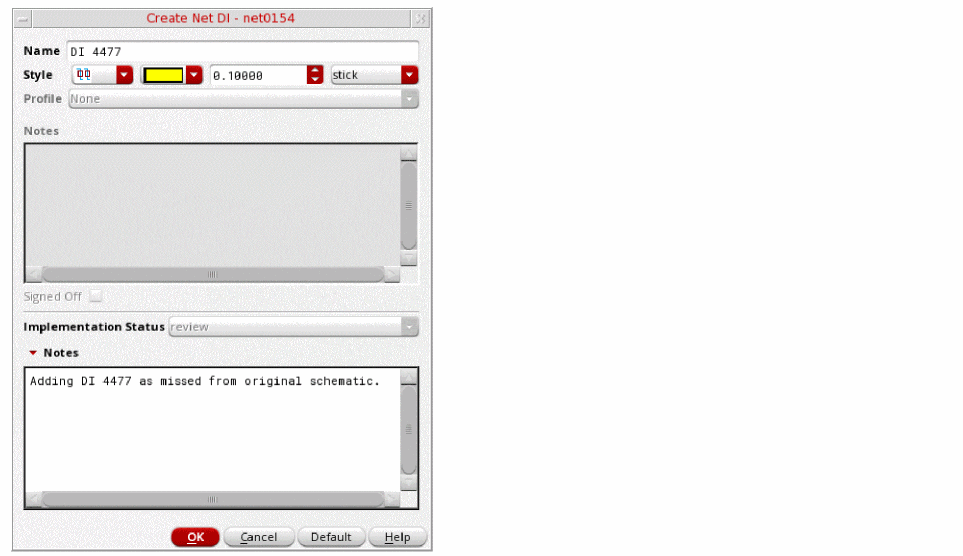 -
Click OK.
In Schematics XL, the affected objects are immediately displayed with thereview status icon and a sync icon as a prompt to Sync the design intent. For more details, see
status icon and a sync icon as a prompt to Sync the design intent. For more details, see
Creating Design Intents in the Constraint Manager
To create a design intent from the Constraint Manager:
- In the Constraint Manager assistant in Layout XL, select the object (instance, net, pin, or terminal) for which you want to create the design intent.
- From the Constraint Creation menu, choose the Design Intent submenu.
-
Choose the design intent category that is to be created for the selected object.
The Create Design Intent form is displayed. For details on how to complete the form, see Creating a Design Intent (in Schematics XL) or Creating a Design Intent in Layout XL. - Select the object and the constraint to be added in the Constraint Manager assistant.
-
Right-click and from the menu displayed, choose Design Intent – Add Design Intent Constraints.
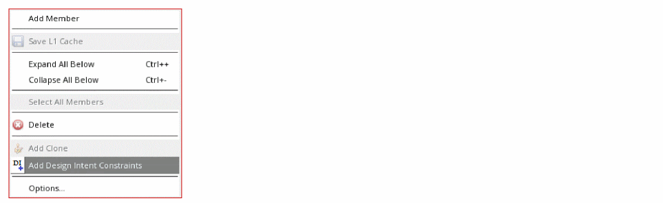The constraint is added to the design intent and its associated objects.

For more information on how to use constraints and the Constraint Manager, see the
Syncing Design Intent
Syncing updates design intent changes in the schematic and layout views and ensures that design intents in both systems are fully synchronized.
The following sections provide information about syncing design intents:
- Checking Updates Before Syncing A Design Intent
- Syncing Between Schematic and Layout Views
- Recognizing Amended Design Intents after Syncing
Checking Updates Before Syncing A Design Intent
Any design intent changes made on the schematic or layout views result in the changes being marked in the other system by a
You can review individual design intent updates before syncing by visiting the
After reviewing the updates for the design intents, you can
Syncing Between Schematic and Layout Views
To sync a schematic or layout view, you must have the same cellview open in both Schematics XL and Layout XL.
Any design intent changes made on the schematic or layout views result in the changes being marked in the other system with a Sync icon 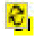 appearing in the Navigator beside each of the amended design intents. These icons are temporary and draw attention to those design intents that have been updated and that require to be synced. The Sync button on the Design Intent toolbar is also enabled.
Syncing in Layout XL
The following changes and updates in Schematics XL result in a sync being required in Layout XL:
- Creation of a new design intent
- Changes to the annotation style
- Updates to the profile or properties
- Updates in the design notes section
- Addition/removal members of a design intent
- Deletion of a design intent
When an update is made to a design in Schematics XL, the Sync button on the Design Intent toolbar is enabled and a sync notification is displayed beside each affected object in the Layout XL Navigator. You can perform a sync on a single design intent or on all the design intent within a design.
Syncing in Schematics XL
The following changes and updates in Layout XL result in a sync being required in Schematics XL:
- Creation of a new design intent
- Changes to the implementation status
- Addition or amendment of implementation notes
- Addition/removal of members of a design intent
When an update is made to a design in Layout XL, the Sync button on the Design Intent toolbar is enabled and a sync notification is displayed beside each affected object in the Schematics XL navigator. You can perform a sync on a single design intent or on all the design intent within a design.
Syncing a single design intent
You can review a large design update that impacts multiple design intents by individually checking and syncing each design intent, one at a time.
To review and update an individual design intent,
- Ensure that the corresponding view is visible in Layout XL or Schematics XL. (This can be read-only.)
- If required, review the updates for each design intent or object with a sync notification displayed. Right-click and choose Design Intent – Edit Design Intent to open the Edit Design Intent form. Add notes if required and click OK.
-
Right-click the object associated with the design intent in Navigator or in the canvas (or if in Layout XL, right-click the design intent glyph) and choose Design Intent – Sync... and choose Sync – for the required design intent.
Only the selected design intent is synced between the schematic and layout cellviews. The sync icon is removed indicating that this design intent is now up to date. - Repeat for any remaining objects with sync notifications displayed in the Navigator.
Syncing Selected Design Intent Only
To review and update only the selected design intent in a design,
- Ensure that the corresponding view is visible in Layout XL or Schematics XL. (This can be read-only.)
- If required, review the updates for each design intent or object with a sync notification displayed. Right-click and choose Design Intent – Edit Design Intent to open the Edit Design Intent form. Add notes if required and click OK.
-
In the Navigator or on the canvas, right-click and choose Design Intent – Sync... – Sync All Selected Design Intent.
The design intent for the selected objects are synced between the schematic and layout cellviews and their sync icons are removed. The Sync button on the toolbar will remain enabled until all the design intent in the design is up to date.
Design intents implemented using constraints do not generate a sync indication.
Syncing All the Design Intent
To review and update all design intent in a design,
- Ensure that the corresponding view is visible in Layout XL or Schematics XL. (This can be read-only.)
- If required, review the updates for each design intent or object with a sync notification displayed. Right-click and choose Design Intent – Edit Design Intent to open the Edit Design Intent form. Add notes if required and click OK.
-
In the Navigator or on the canvas, right-click and choose Design Intent – Sync... – Sync All Design Intent, or click on the Sync button on the toolbar.
All design intent in the design is synced between the schematic and layout cellviews. The sync icons are removed and the Sync button on the toolbar is disabled, indicating that the design is now up to date.
Recognizing Amended Design Intents after Syncing
On syncing a design, the sync notification is removed from recently amended and updated design intents. The updated design intents that require attention are then identifiable by the implementation status icons on the Navigator or by hovering over a design intent to display a tooltip.
|
|
|
|
Shows the schematic designer’s design goals and any additional comments are listed. |
|
|
Shows the current implementation status for each design intent. |
|
|
Shows the layout designer’s progress in implementing the design intent and any additional comments are listed. |
Editing a Design Intent
You can edit a design intent using the Edit Design Intent form. Access the form by right-clicking the required object in the Navigator or on the canvas:
- right-click the required object and choose Design Intent – Edit Design Intent option.
- click the object’s glyph and click Edit on the Design Intent Info Balloon that is displayed.
- click the object’s glyph and double-click on the Design Intent Info Balloon that is displayed.
If an object is associated with more than one design intent, a submenu is displayed listing the different design intents available to be edited.
The following sections provide information about editing design intents:
- Editing a Design Intent in Schematics XL
- Editing a Design Intent in Layout XL
- Adding a Physical Constraint to an Existing Design Intent
- Reviewing and Editing a Design Intent Created in Layout XL
Editing a Design Intent in Schematics XL
-
Open the Edit Design Intent form from the Navigator or the canvas.
A submenu is displayed if there are multiple design intents available for the selected objects. -
Choose the design intent to be edited.
The form is divided into three parts: the upper and middle sections are completed in Schematics XL.
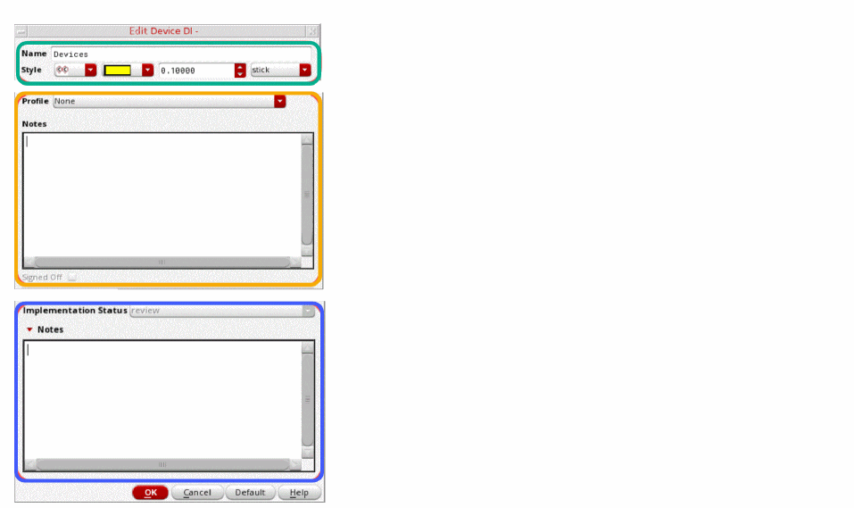 - Edit the Name, Style or Profile on the upper section of the form as required.
- Amend the Notes in the middle section if required.
- Review the Implementation Status and accompanying Notes in the lower section of the form. If a response is required to assist the layout designer in implementing the design intent, enter any additional notes.
-
If the Signed Off option is enabled it means the design intent has an implementation status of
completeorreview.
If the status isreview, the design intent was created in Layout XL. See Reviewing and Editing a Design Intent Created in Layout XL for more details.
If the status iscomplete, review the original design intent that was requested against any recorded notes and the actual outcome. If the design intent is considered to be satisfactorily implemented into the design, click the Signed Off option. -
Click OK.
In Layout XL, the affected objects are immediately displayed with a sync icon as a prompt to Sync Design Intent.
The functions ciTemplateChangeDIProfile and ciTemplateUpdateDIProps can also be used to edit a design intent using SKILL. For more details about the SKILL functions available for Design Intent, see
Editing a Design Intent in Layout XL
-
Open the Edit Design Intent form from the Navigator or the canvas.
A submenu is displayed if there are multiple design intents available for the selected objects. -
Choose the design intent to be edited.
The form is divided into three parts: only the lower section is completed in Layout XL.
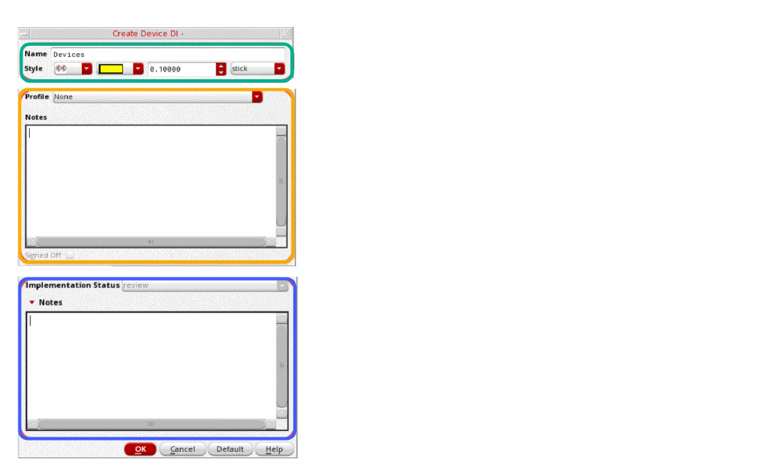 - Review any Notes in the middle section of the form. The information provided can be used as the basis for the layout designer to implement the design intent.
- In the lower section, provide any additional Notes to query or update the schematic designer regarding the implementation of the design intent
- Update the Implementation Status as required on the lower section of the form.
- Select OK.
- In Schematics XL, the Sync button on the Design Intent toolbar is enabled and the affected objects are immediately displayed with a sync icon as a prompt to Sync Design Intent.
Adding a Physical Constraint to an Existing Design Intent
To avoid creating a constraint view when transferring from Layout XL to Schematics XL using the Update Layout/Schematic Constraints button, all the constraints on a design must be physical constraints and be included in the design intent template. Constraints are added to a design intent using the Constraint Manager assistant's Add Design Intent Constraints option.
- Select the object and the constraint to be added in the Constraint Manager assistant in Layout XL.
-
Right-click and from the menu displayed, choose Add Design Intent Constraints.
The constraint is added to the design intent and its associated objects.

For more information on how to use constraints and the Constraint Manager, see the
Reviewing and Editing a Design Intent Created in Layout XL
If a design intent was created in Layout XL, the process differs as all design intents must be reviewed, synced, and validated within Schematics XL before they are fully integrated into the normal implementation process.
In the Schematics XL Navigator, the new design intent has a sync 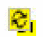 icon and the review status icon displayed beside it.
status icon displayed beside it.
- In the Navigator, right-click the design intent, or on the canvas right-click an object associated with the new design intent and choose Design Intent – Edit Design Intent.
- If there are multiple design intents available for the selected objects, a submenu is displayed. Choose the design intent to be edited.
-
Review the Notes in the lower section of the form:
- If you identify the need for further changes, or any issues or queries that prevent you from validating the new design intent, record these within the middle section’s Notes.
- Alternatively, if the new design intent has been satisfactorily implemented and requires no other action, it can be considered validated and signed off. In the Notes within the middle section, confirm that the design intent is acceptable and add any additional comments if required . Select the Signed Off option and click OK. The status icon for the object changes to complete .
- Edit the Name, Style or Profile on the upper section of the form as required.
- Click OK.
-
In the Navigator, individually sync the new design intent.
Only the selected design intent is synced between the schematic and layout cellviews. The sync icon is removed indicating that this design intent is now up to date.
In Layout XL, the Sync button on the Design Intent toolbar is enabled and the affected objects are immediately displayed with a sync icon as a prompt to Sync Design Intent. Each object has an implementation status of none as the layout designer is required to respond to the notes or queries and can be processed as normal.
Adding Objects to a Design Intent
You can add single or multiple objects to a design intent by selecting the required objects in the Navigator or on the canvas and choose Design Intent —Add Object to Design Intent option.
When there are multiple design intents available, a submenu is displayed from the Add Object to Design Intent option, listing the different design intents available for the selected objects.
Adding an object to a design intent in Layout XL, requires the design intent to be reviewed and validated within Schematics XL before it is fully integrated into the normal implementation process. For more details, see Reviewing and Editing a Design Intent Created in Layout XL.
To add an object to a design intent:
- Right-click the selected objects to be added to a design intent in the Navigator or on the canvas.
-
Choose Design Intent – Add Object to Design Intent.
A submenu is displayed if there are multiple design intents available for the selected objects. -
Choose the design intent to which the objects are to be added.
Design intent Annotations are created on the canvas for the selected objects. -
Record the addition and any relevant information in the Edit Design Intent form. This helps the designer of the other application understand the reasons behind the change. For more details, see Editing a Design Intent.
If the change is made in Schematics XL, the Sync button on the Design Intent toolbar is enabled in Layout XL and the affected objects are immediately displayed with a sync icon as a prompt to Sync Design Intent.
If the change is made in Layout XL, the Sync button on the Design Intent toolbar is enabled in Schematics XL and the affected objects are immediately displayed with a sync icon as a prompt to Sync Design Intent. The implementation status of the design intent changes toreviewallowing the schematic designer to review and validate the design intent.
Copying Objects with Design Intents
To copy an object including any associated design intent:
- From the view, choose Edit – Copy.
-
Press
F3to display the Copy form.
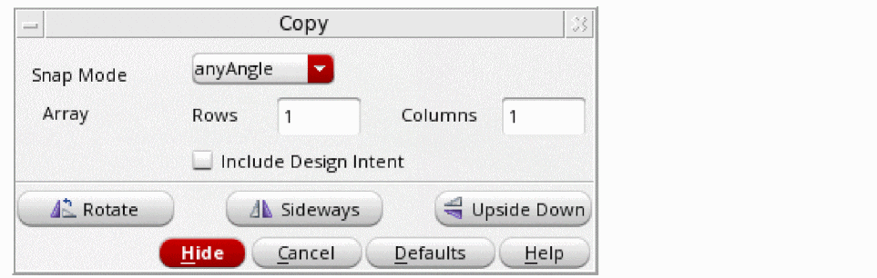 - Select the Include Design Intent option.
- Select the object you want to copy.
- Click a destination for the copy.
Renaming Objects with Design Intents Associated
Objects with design intents associated can be renamed as normal. The new name is reflected in any design intent associated with the object when the Check and Save command is run. See
Removing Objects from Design Intents
You can remove single or multiple objects from a design intent by selecting an associated object in the Navigator or on the canvas, and choose Design Intent – Remove Object from Design Intent.
When the selected objects are associated with multiple design intents, a submenu is displayed listing the different design intents available to be removed.
Removing an object from a design intent in Layout XL, requires the design intent to be reviewed and validated within Schematics XL before it is fully integrated into the normal implementation process. For more details, see Reviewing and Editing a Design Intent Created in Layout XL.
To remove an object from a design intent:
- Select the objects to be removed from the design intent either in the Navigator or on the canvas.
-
Right-click and from the menu displayed, choose Design Intent – Remove Object from Design Intent.
A submenu is displayed if there are multiple design intents available for the selected objects. -
Choose the design intent from which the objects are to be removed.
The selected objects are removed from the design intent. -
Record the removal and any relevant information in the Edit Design Intent form. This helps the designer of the other application understand the reasons behind the change. For more details, see Editing a Design Intent.
If the change is made in Schematics XL, the Sync button on the Design Intent toolbar is enabled in Layout XL and the affected objects are immediately displayed with a sync icon as a prompt to Sync Design Intent.
If the change is made in Layout XL, the Sync button on the Design Intent toolbar is enabled in Schematics XL and the affected objects are immediately displayed with a sync icon as a prompt to Sync Design Intent. The implementation status of the design intent changes toreviewallowing the schematic designer to review and validate the design intent.
Deleting a Design Intent
You can delete a design intent by selecting the design intent in the Navigator and choosing Design Intent – Delete Design Intent or by selecting an associated object and right-clicking in the Navigator or on the canvas and choosing Design Intent – Delete Design Intent.
The Delete Design Intent option deletes the design intent from the selected object, all associated objects and from the cellview. If you only want to remove selected objects from a design intent, use the Remove Object from Design Intent option.
A submenu is displayed if there are multiple design intents available for the selected objects. An additional option to Delete All Design Intent On Selected Objects is also available which deletes the associated design intents from the selected object, all associated objects, and from the cellview.
To delete all the design intent in the cellview use the Delete All Design Intent in Cellview option which is accessed by right-clicking on the navigator or on the canvas, or using  on the toolbar.
on the toolbar.
The following sections provide information about deleting design intents:
Deleting Design Intent on Objects
- In the Navigator select the design intent to be deleted, or on the canvas right-click an object associated with the design intent to be deleted.
- From the menu displayed, choose Design Intent – Delete Design Intent.
-
If there are multiple design intents available for the selected objects, a submenu is displayed. Choose the design intent to be deleted.
The design intent is deleted from all associated objects and from the cellview.
In Layout XL, the Sync button on the Design Intent toolbar is enabled and the affected objects are immediately displayed with a sync icon as a prompt to Sync Design Intent.
To delete all design intent associated with an object:
- Select the object in the Navigator or on the canvas.
-
Right-click and choose Design Intent – Delete Design Intent – Delete All Design Intent On Selected Objects.
The associated design intents are deleted from the selected objects, all associated objects, and from the cellview.
In Layout XL, the Sync button on the Design Intent toolbar is enabled and the affected objects are immediately displayed with a sync icon as a prompt to Sync Design Intent.
Deleting All Design Intent in Cellview
The Delete All Design Intent in Cellview option removes all the design intent from all objects in the cellview. It is available by selecting the
To delete all design intent using the design intent toolbar:
-
Save the cellview.
Deleting all the design intent in a cellview cannot be undone. By saving a copy of the cellview you can revert back to the saved cellview if required. -
Click the button on the Design Intent toolbar or right-click any object in the Navigator or on the canvas. You are prompted to confirm the deletion before the design intent is removed.
In Layout XL, the Sync button on the Design Intent toolbar is enabled and the affected objects are immediately displayed with a sync icon as a prompt to Sync Design Intent.
Generating Reports on Design Intent
The progress of all the design intent implementation on a design can be checked at any point using a high level report generated from Schematics XL or Layout XL. The report provides a summary of the design intent within a design, reporting the implementation status of each design intent with the associated notes capturing the communication between the layout and schematic designers. It is useful to keep abreast of the latest design changes and to review the progress of the project as a whole.
The report displays the date and time the report was generated and is divided with a navigation pane on the left and a pane containing the report content on the right.
On the navigation pane:
Summary selecting this option displays the design intent summary in the report pane.
Detail selecting this displays the Detail section at the top of the report pane. The Detail table summarizes the status of each design intent. All the columns are filterable and selecting any item on a row, displays that design intent at the top of the report pane. Each row includes the following information:
Type A pictorial symbol for the design intent type.
Name The name of each design intent.
Status The current implementation status of each design intent.
Signed Off The current stage of validation for each design intent.
On the report pane:
Library / Cell / View / Revision details the library, cell, view, and revision from which the design intent information is sourced.
Signed Off provides an overview of the number of design intents currently pending validation or validated as having been achieved in Schematic XL. For more details, see Verifying and Signing Off a Design Intent.
Status Distribution provides an overview of the implementation progress of all design intent into the design.
Detail lists the following information for each design intent, if available:
Type displays the type of design intent.
Name displays the name of the design intent.
Status displays the current implementation status of the design intent.
Signed Off displays the Sign-off status of the design intent. A tick denotes that the design intent is completed in Layout XL and validated in Schematic XL as having been achieved in the design. For more details, see Verifying and Signing Off a Design Intent.
Profile displays the property configurations assigned to the design intent.
Members Information (available for categories HighCurrent and MaxVoltageDrop only) displays the objects on which the design intent applies and the voltage or current that has been specified for each.
Design Notes displays the schematic designer’s design goals and any additional comments. This is the information entered in the Notes field of the middle section of the Edit Design Intent form.
Implementation Notes displays the progress or strategy used by the layout designer to implement the design intent. This is the information entered in the Notes field of the lower section of the Edit Design Intent form.
Implementation Constraints displays the constraints defined for the design intent.
Running Design Intent Reports
To run a design intent report from either Schematics XL or Layout XL:
-
Click Report 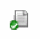 on the Design Intent toolbar. The Configuration: Design Intent Report dialog box is displayed.
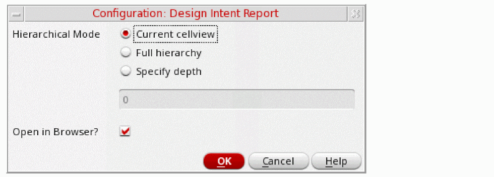 - Select the Hierarchical Mode required:
- If Open in Browser? is selected, when you click OK, a new web browser is opened displaying the full report for the design. Deselecting this option generates the report without opening it.
- Click OK. The report is generated and displayed for review.
Verifying and Signing Off a Design Intent
The Signed Off option is located on the Edit Design Intent form and is enabled only in Schematics XL for design intents with a status of complete or review. Selecting this option validates that the design intent has been implemented in Layout XL and confirms that the design goal has been satisfactorily achieved within the design.
review
status icon is automatically given to design intents that are created or objects that are added or removed in Layout XL. Each requires to be reviewed and validated in Schematics XL before they are signed off. For more details, see Reviewing and Editing a Design Intent Created in Layout XLWhen the layout designer considers the design intent to have fulfilled the original goal including any adjustments (captured within the design intent) they set the implementation status to complete . In order to be considered fully implemented, the design intent must be reviewed and signed off by the schematic designer.
- Identify the design intent with a status of complete in the Schematics XL Navigator.
- Right-click a design intent or an object associated with the design intent and choose Design Intent – Edit Design Intent.
- Review the original design intent that was specified against any recorded notes and the actual outcome.
-
If the design intent is considered to have been satisfactorily implemented into the design, select the Signed Off option and click OK.
When design intent Generating Reports on Design Intent are run, the Signed-off column displays a icon against the design intent.
Return to top